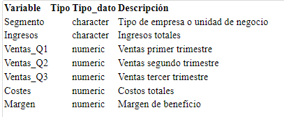

Proyecto para el curso de Modelos Lineales de la Licenciatura en Estadistica
En el presente trabajo se analizará un conjunto de datos de economicos, correspondientes a 159 empresas. Para cada ejemplar se registraron medidas como ventas en distintos trimestres, costes, margen, ingresos, tipo de empresa. Estas mediciones conforman un total de siete variables.
El objetivo principal del análisis es explicar y predecir los ingresos de la empresas en función de sus ventas, mediante la construcción de un modelo de regresión lineal. Para ello, se convertirá la variable "Ingresos" a formato numérico y se aplicará un enfoque sistemático que incluirá análisis exploratorio, selección de variables, evaluación del ajuste del modelo, diagnóstico de supuestos y valoración del rendimiento predictivo.
Este estudio busca responder preguntas relevantes como:
- ¿Existe una relación significativa entre las ventas trimestrales, los costos, el margen y los ingresos?
- ¿Cuáles son las variables que mejor predicen los ingresos de una empresa?
- ¿Estas relaciones se mantienen constantes entre diferentes empresas?
Con ello, se plantean las siguientes hipótesis:
Hipótesis 1)
- Ho) No existe relación lineal significativa entre las caracteristicas de la empresa y sus ingresos.
- H1) Al menos una dimensión se relaciona significativamente con el ingreso
Hipótesis 2)
- Ho) Todas las caracteristicas tienen coeficientes iguales a cero en el modelo.
- H1) Al menos una variable predictora tiene un efecto distinto de cero.
Hipótesis 3)
- Ho) Las caracteristicas de la empresa afectan al ingreso de igual forma en todos los tipos de empresas.
- H1) El efecto de las caracteristicas sobre el ingreso varía según el tipo de empresa.
Finalmente, se busca obtener un modelo de regresión lineal significativo y útil para la predicción del ingreso, identificar las variables más influyentes, y presentar los hallazgos mediante visualizaciones e interpretaciones claras y fundamentadas.
Finalmente, se busca obtener un modelo de regresión lineal significativo y útil para la predicción del ingreso, identificar las variables más influyentes, y presentar los hallazgos mediante visualizaciones e interpretaciones claras y fundamentadas.
El conjunto de datos analizado consta de 159 observaciones. Cada registro incluye siete variables, de las cuales seis son numéricas y una categórica. La variable Segmento identifica el tipo de empresa al que pertenece cada observación y corresponde. La variable Ingresos es la de interés y es cuantitativa.
Las variables Ventas_Q1, Ventas_Q2 y Ventas_Q3 recogen tres mediciones trimestrales, mientras que Costes y Margen son representan los gastos de la empresa y el rendimiento de la empresa a traves del margen En conjunto, estas variables permiten analizar la relación entre las caracteristicas de la empresa y el nivel de ingresos, constituyendo la base del análisis estadístico desarrollado en este trabajo.
